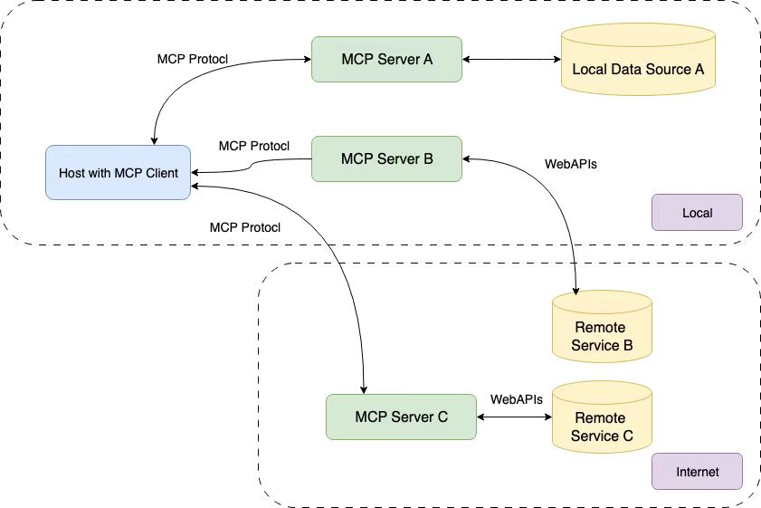

MCP Server学习
概述
内容简介
本文主要介绍MCP（Model Context Protocol）的相关内容。在MCP Server开发方面，以python在linux环境构建MCP服务为例，介绍了环境设置，服务构建过程。
基本概念
MCP总体架构如图所示

MCP 的核心遵循客户端-服务器架构，其中主机应用程序可以连接到多个服务器，参考 Introduction - Model Context Protocol
- MCP主机：类似于IDE或AI工具这样的程序，可以通过MCP访问程序
- MCP客户端：与服务端保持连接的协议客户端
- MCP服务器：提供功能服务的轻量级程序，每个程序都可以通过MCP公开特定功能
- 本地数据源：本地的MCP服务器可以安全访问本地的文件、数据库和服务
- 远程服务：MCP服务器可以通过互联网（如）API连接到外部系统
MCP Server 开发
本文以python在linux环境构建MCP服务为例，具体python开发，可以参考官方github MCP Python SDK，其他语言的sdk在MCP官网也有介绍
环境设置
官方推荐使用uv来管理MCP项目，如下为安装uv的指令
1 | curl -LsSf https://astral.sh/uv/install.sh | sh |
创建流程如下代码所示
1 | # inti |
服务构建
准备工作
新建 mcp_server.py ，用于开发mcp服务，添加如下代码用于导入包和设置实例，其中 FastMCP 类使用 Python 类型提示和文档字符串自动生成工具定义，从而创建和维护 MCP 工具
1 | from mcp.server.fastmcp import FastMCP |
在 main.py 中添加主函数
1 | from mcp_server import mcp |
至此，即可正式在 mcp_server.py 中开始开发mcp服务。
服务开发
FastMCP提供了三种典型MCP函数：tool、resource以及prompt
此外，为了让 LLM 更好的理解该服，通常需要在函数定义下方第一行，添加注释，来描述该函数的作用
- tool：工具将常规的python函数转换为 LLM 可以在对话中调用的功能，从而让 LLM 可以通过该函数执行查询数据库、调用API、计算等任务
- resource：资源表示 MCP 客户端可以读取的数据或文件，这允许 LLM 访问与对话相关的文件、数据库内容、配置或动态生成的信息
- prompt：prompt是可重复使用的消息模板，可帮助 LLM 生成结构化、有针对性的响应，使得可以定义 LLM 可以在不同的客户端和环境中使用的一致、可重复使用的模板
tool
一个加法的示例如下，tool包括其他函数均需要显式指定参数类型和返回值类型
1 |
|
通过如上函数定义，即定义了一个加法服务，从而 LLM 即可通过调用该 MCP 服务来实现加法
tool的返回类型可以为原始类型（str、int、float、bool等），也可以为通用类型、自定义类型等，具体可见 MCP Python SDK
1 |
|
resource
一个resource的例子如下
1 |
|
prompt
一个prompt的例子如下
1 | from mcp.server.fastmcp.prompts import base |
运行测试
至此，即可通过运行 uv run main.py 来确认是否一切正常（默认无输出）
其他
mcp还提供了Image来处理图像、Context来与底层 MCP 会话交互或访问服务器功能（包括日志记录、进度报告等）等其他功能，具体同样参考 MCP Python SDK